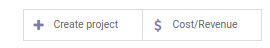
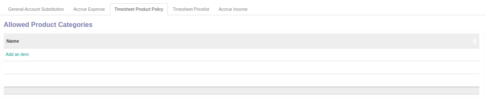
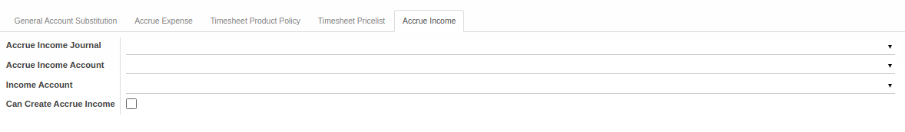

Penjelasan Analytic Account
Informasi pada Analytic Account dibagi menjadi beberapa bagian, yaitu:
- Header
- Tab General Account Substitution
- Tab Accrue Expense
- Tab Timesheet Product Policy
- Tab Timesheet Pricelist
- Tab Accrue Income
HEADER

Account/Contract Name
Nama akun/produk.
Timesheet
to do.
Tasks
to do.
Issues
to do.
Smart Button

Tombol-tombol yang berfungsi sebagai Shortcut untuk masuk ke dalam menu yang berkaitan dan juga sebagai pemberi informasi mengenai seberapa banyak data, total, dll
Customer
Nama klien.
Account Manager
Nama penanggung jawab akun.
Type of Account
Tipe akun.
Reference
Referensi.
Parent Analytic Account
Induk akun analitik.
Company
Nama perusahaan.
TAB GENERAL ACCOUNT SUBSTITUTION

TABEL General Account Substitution
Daftar produk dengan mapping akun substitusi.
Product
Nama produk.
Income General Account
Nama akun penerimaan.
Expense General Account
Nama akun pengeluaran.
TAB ACCRUE EXPENSE
Tab ini akan muncul jika Timesheets diaktifkan.

Accrue Expense Journal
Nama jurnal accrue expense.
Accrue Expense Account
Nama akun accrue expense.
Can Create Accrue Expense
Sebagai penanda dapat membuat/tidak accrue expense.
TAB TIMESHEET PRODUCT POLICY
Tab ini akan muncul jika Timesheets diaktifkan.

TABEL Allowed Product Categories
Daftar kategori produk yang diperbolehkan.
Name
Nama kategori produk.

TABEL Allowed Product
Daftar produk yang diperbolehkan.
Internal Reference
Referensi internal produk.
Name
Nama produk.
Brand
Merk produk.
Attributes
Informasi atribut.
Public Price
Harga yang dipublikasi.
Quantity On Hand
Jumlah unit yang ada di perusahaan.
Forecast Quantity
Jumlah unit yang diperkirakan.
Unit of Measure
Satuan ukuran.
EAN13 Barcode
Informasi EAN13 barcode.
TAB TIMESHEET PRICELIST
Tab ini akan muncul jika Timesheets diaktifkan.

TABEL Timesheet Pricelist
Daftar user dan produk dengan standar harga.
User
Nama user.
Product
Nama produk.
Timesheet Pricelist
Daftar standar harga.
TAB ACCRUE INCOME
Tab ini akan muncul jika Timesheets diaktifkan.

Accrue Income Journal
Nama jurnal accrue income.
Accrue Income Account
Nama akun accrue income.
Can Create Accrue Income
Sebagai penanda dapat membuat/tidak accrue income.